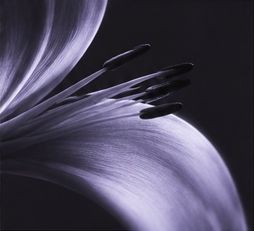
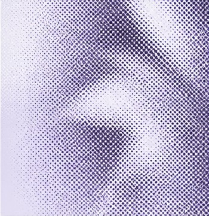
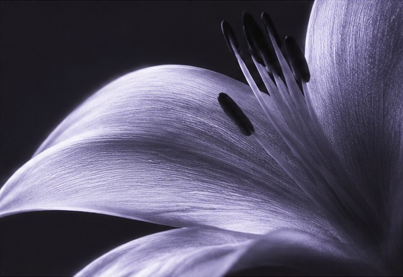
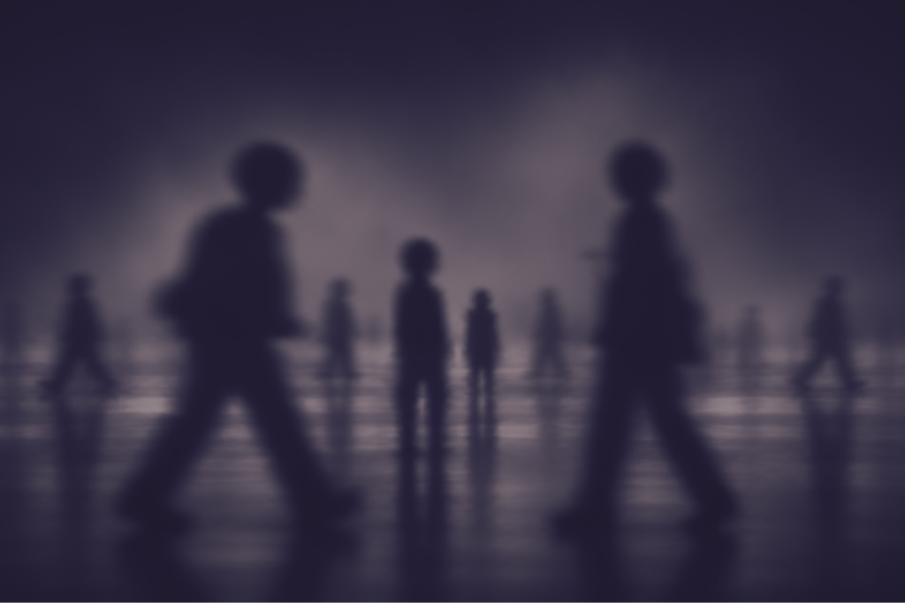
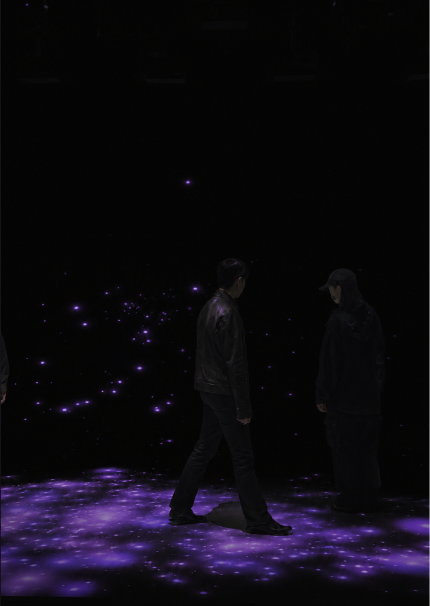
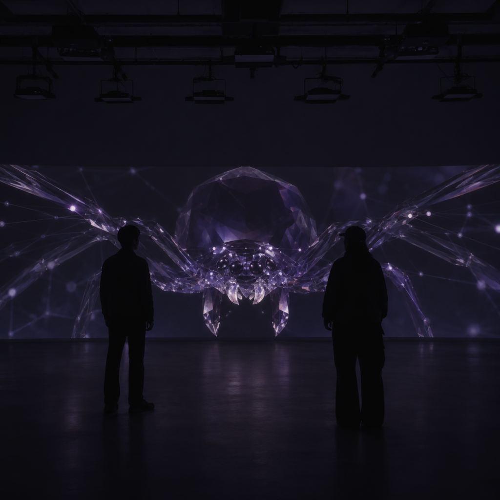
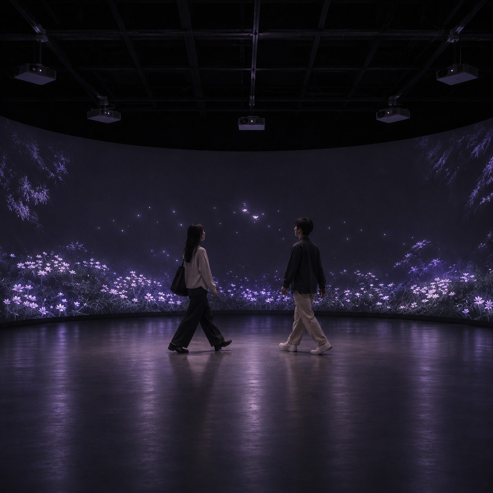

Between
Reality and
Dream



내가 고른 방향은 정말 나만의 선택일까?
OUR CONCEPT / 기획 의도
익숙한 흐름을 멈추고,
나의 선택을 바라보다.
외부의 신호와 타인의 움직임 속에서,
내가 고른 방향은 어디에서 시작되었을까요?
LIMEN은 현실과 꿈의 경계에서
익숙한 흐름을 멈추고 나의 선택을 돌아봅니다.

현실과 꿈 사이,
선택의 경계에 머무는 순간.
CORE CONCEPT / 세 가지 인식의 순간
FLOW
흐름을 마주하다
외부의 신호와 타인의 움직임 속에서
나를 둘러싼 흐름을 발견합니다.
AWARENESS
영향을 알아차리다
익숙한 감각을 잠시 멈추고,
선택에 스며든 영향을 바라봅니다.
CHOICE
나의 선택을 바라보다
장면을 지나 다시 나에게 돌아와,
나만의 방향을 질문합니다.
다섯 장면을 지나, 다시 나에게.
OUR JOURNEY
장면 구성
작은 신호에서 이끌림으로,
관계에서 자각으로.
다섯 장면을 따라가며
나의 선택에 남은 흔적을 되짚습니다.


연결된 관계를 인식하다
서로의 흐름을 마주하다

나의 선택을 다시 바라보다
OUR EXPERIENCE / 관객 경험
나의 움직임이
하나의 장면이 되다.
관람에서 참여로, 감각에서 자각으로.
관객의 위치와 움직임이 빛과 영상에 반영됩니다.
나의 작은 움직임은 타인의 흐름과 만나
하나의 장면으로 이어집니다.
LIGHT · MOVEMENT · INTERACTION
INSIDE LIMEN
관객의 움직임이
공간의 빛을 바꿉니다.
INSIDE LIMEN / 전시 공간과 사용 장비
Space
PLAN YOUR VISIT / 전시 안내
현실과 꿈의 경계에서
당신을 기다립니다.
2026.11.20 — 11.22
OPENING HOURS
11월 20일 10:00 — 15:00
11월 21–22일 10:00 — 18:00
VENUE
계원예술대학교 정보관 8층
호라이즌 스튜디오
CAMPUS GUIDE / 캠퍼스 안내도
정보관으로 오신 뒤 8층 호라이즌 스튜디오로 이동해주세요.